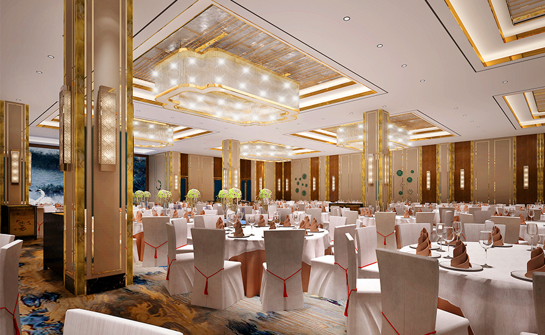
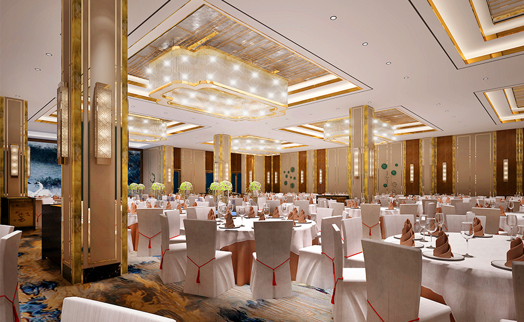

陈书婷模拟器
假如你是陈书婷，你会做出什么选择呢？ 点击下方按钮，一起来看看吧！
？？？
“陈书婷，之前的事情，我代表我和我弟弟向你道歉。”
你
（内心OS）什么情况？我是谁？我怎么会在这里？
（缓慢睁眼，眼前是头发茂盛却胡子拉碴的高启强向你递过来一袋橘子）
（内心OS）老高……你怎么会在这里？
（内心OS）我刚刚不是还在车上和儿子说话吗？然后，一辆车向我撞了过来，我就什么都不记得了……
（内心OS）难道……我重生了？
你不记得上一世发生什么了，需要回忆一下
你记得上一世发生了什么
你叫陈书婷，是京海市的黑帮老大陈泰的养女。 你大气、精明，是有能力也有气场的女强人。 上一世，你在丈夫死后选择嫁给了高启强，在你的扶持下，高启强势力逐渐变大，一步步顶替了陈泰，成为了京海市的黑帮大哥，而你，也成为了黑帮大嫂。 然而，在商业竞争的过程中，你不幸被竞争对手制造车祸杀害。 你没有想到的是，车祸后，你又在高启强送你橘子的那一天，重生了。 重生后，你想起了上一世的愿望：你不想再过黑帮那种水深火热的生活，不想再沾手违法的事情，你只想过安稳日子。 但上一世，因为高启强的固执，你最终还是死在了竞争对手的手下。 这一世，你决定不再依靠高启强，你要凭借自己的双手，创造自己想要的生活。
上一世，本想开始过安稳日子，但因为高启强的固执，你最终还是死在了竞争对手的手下。 这一世，你决定不再依靠高启强，你要凭借自己的双手，创造自己想要的生活。
高启强
（嬉皮笑脸）我朋友种的橘子，挺好吃的，你尝尝。
（没有接，板着脸）找我什么事？
（正经脸）我想见见泰叔。
（疑惑脸）见泰叔？为什么？
（正在这时，儿子晓晨突然说想去旁边游乐场玩，高启强顺势陪晓晨一起去玩）
高启盛
没事，你让他们玩嘛。我小的时候，我哥每天接送我们上下学，给我们做吃的，他还要管那个鱼档。
你哥孩子多大了？
他没谈过恋爱。
啊？你哥，没谈过恋爱？这岁数
对高启强开始感兴趣，决定把他引荐给泰叔。
“没谈过恋爱关我什么事儿？”
你做出了和上一世相同的选择，高启强认了陈泰当干爹，你和高启强结了婚。
婚后虽然也有幸福的时光，但你逐渐厌倦了这种与警察为敌、总是躲躲藏藏的生活。
尽管你向高启强提出要把所有的灰色产业都“洗白”，却依然挡不住竞争对手向你伸来的黑手，最终被竞争对手害死。
没谈过恋爱关我什么事儿？难道要我来教他谈恋爱？（疑惑脸）
（向着游乐场的方向大吼）白晓晨！你给我过来！
（面向高启强、高启盛）不好意思啊，两位，泰叔比较忙，他不喜欢别人没事儿去打扰他，橘子呢我就收下了，咱们有缘咱会哈！（微笑转身离去）
这一世，你没有选择帮助高启强，而是在泰叔的帮助下，开启了自己的事业，并且有意避开了与违法相关的业务。
高家兄弟的小灵通公司也越做越大，你和高启强多次在商业场合上相遇，高启强也不止一次地向你示好，但你与他的关系依然只停留在朋友的层面。
有一次，在商业聚会上，高启强喝多了之后遇见你。
书婷，我们认识这么多年了，我承认一开始确实有看重你和泰叔的势力和资源，但现在我已经不在乎这些了，我是发自内心地喜欢你……
老高，我很早就知道你是个好男人，但我已经过够了因为男人犯的事儿被迫躲躲藏藏的日子了。
这一次，我不想再依附于男人了。
我想靠我自己。
刚才，你体验了一次电视剧《狂飙》中陈书婷一角的感受，你可能选择了与原剧相同的发展路线，与高启强结婚并扶持高启强成为黑帮大哥。你也可能选择帮陈书婷开启了新的人生，让她开创了自己的事业。
实际上，哪一条路都不是绝对正确的选择，独自开创事业的陈书婷也可能经历挫折与失败。
但我们需要知道，“成为男性角色的依附”，永远不应该成为影视剧中女性角色唯一的选择。
 
